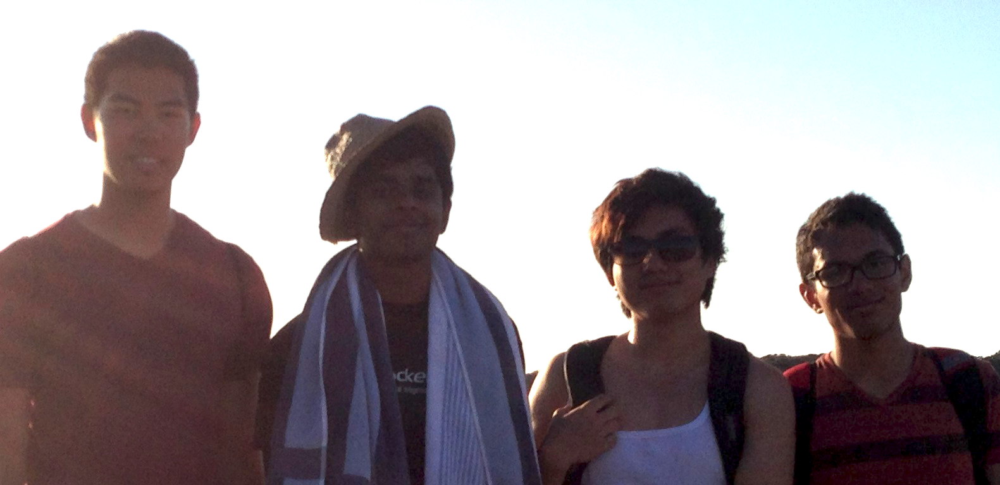

About Us:
The Game Development Studio or GDS is an UCSD student organization dedicated to helping students gain experience in game designing through collaborative projects. We are dedicated to working with a number of different platforms such as iPhones/Androids, PC's, and others. GDS is open to students from all different majors and backgrounds to join the club.
History:
The Game Development Studio started off in Fall 2013 when a group of UCSD computer science major students decided to get together to work on a project in the interest of advancing their programming skills and gain experience working as a team. Originally christened Squid Inc., the group (not yet officially a student organization) worked on a computerized version of the popular board game Settlers of Catan. Squid Inc. soon began to attract the attention of other students outside of the computer science majors and over the year students from a variety of majors began to join. Using tools such as GitHub, GIMP, and Eclipse the team developed a computerized board game called Enceladus (2014). Seeing the growing interest in the undergraduate community and going into its second year, Squid Inc. took the next logical step and has now officially been incorporated into a UCSD Pre-professional Student Organization. Now with the university and our new video game development faculty advisor's support GDS is eager to begin working on its next project going into 2014.
What We Do:
This year GDS plans on creating a cross platform game that bridges the gap between desktop and mobile. Using Unity, Blender, and Gimp, we will create a competitive yet engaging mobile game that allows for the optional addition of computer browser displays. The club also has numerous events outside of the project including beach trips, potlucks, job fair networking, and much more!
